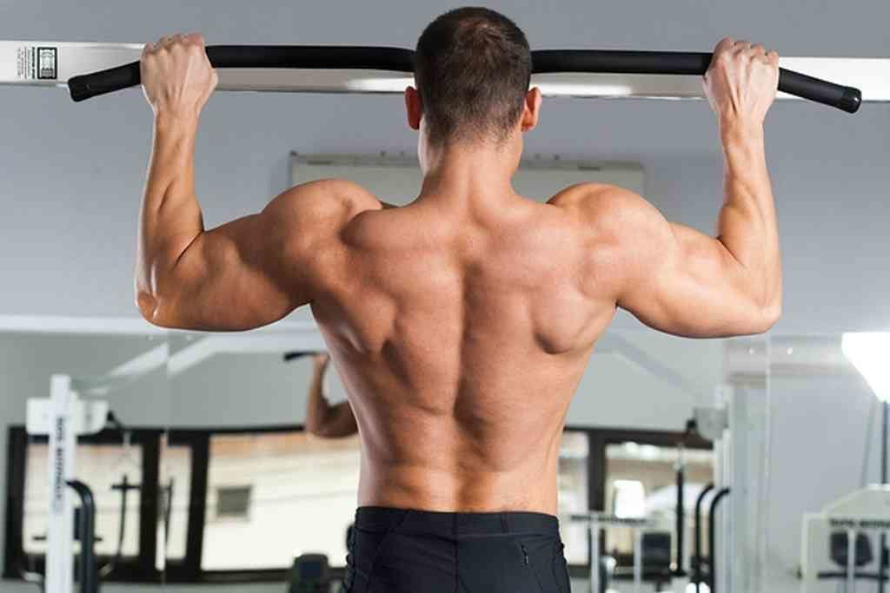

등운동
랫 풀 다운
이번에는 바로 운동법 입니다.
저도 처음에 랫풀다운 기구를 사용했을때는 팔힘으로 그냥 내리기만 했습니다.
그래서 항상 무게를 많이 드는것에 초점을 맞추며 했죠.
먼저 바로 운동법을 알아보고 개인적인 팁을 드리겠습니다.
1. 바를 어깨보다 약간 넓게 잡아줍니다.
2. 숨을 뱉으며 팔꿈치가 옆구리나 바닥을 찍는 느낌으로 약간 누우며 당겨줍니다.
3. 숨을 마시며 등의 이완을 느끼며 올라가줍니다.
4. 등의 수축과 이완을 느끼며 반복해줍니다.(10~15회 3세트)
운동 방법은 매우 쉽습니다. 당기고 올라가고
하지만 등에 자극을 주며 정확한 자세는 매우 어렵습니다.
꼭 낮은 무게로 먼저 연습하시길 바랍니다.
먼저 단지 팔로 내린다고 팔꿈치가 뒤로 빠지면 안됩니다.
랫 풀 다운은 정확한 등 운동입니다.
팔 운동으로 진행되면 안됩니다.
가슴을 활짝 펴고 견갑골을 접어두는 느낌으로 등에 자극을 주고 운동을 시작하시면 됩니다.
또한 다시 올라갈때 꼭 광배근을 먼저 보내고 팔이 딸려올라가는 느낌으로 운동을 진행해주세요.
꼭 팔 전체의 힘을 등으로 다 실어 운동하는 느낌으로 해주셔야 합니다.
바는 쇄골과 윗가슴 사이가 제일 적당합니다.
올릴때도 빠르게가 아닌 천천히 버티면서 광배를 먼저 위로 보내주며 팔이 딸려가야 합니다.
처음 화면으로